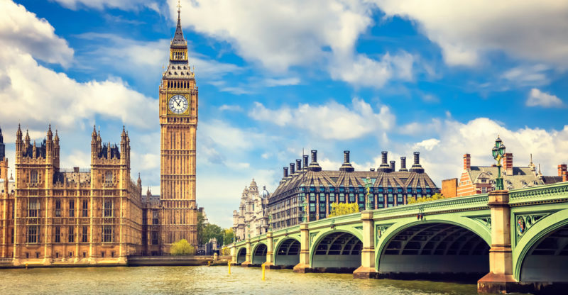

Londres, Inglaterra
A paisagem de Paris é marcada pelo rio Sena, que a divide em Rive Gauche e Rive Droite, e pela sua arquitetura urbana com avenidas largas e monumentos icónicos como a Torre Eiffel, o Arco do Triunfo e a Catedral de Notre-Dame. É também conhecida pelos seus belos parques e jardins, como o de Luxemburgo e o das Tulherias, e por bairros charmosos como Montmartre e Marais. Características Principais
- Rio Sena: Divide a cidade e é atravessado por inúmeras pontes, oferecendo belas vistas e passeios de barco.
- Avenidas e Monumentos: Caracteriza-se por avenidas largas, como a Champs-Élysées, e por monumentos imponentes como a Torre Eiffel, o Arco do Triunfo e a Catedral de Notre-Dame.
- Parques e Jardins: A cidade possui muitos espaços verdes, incluindo o Jardim de Luxemburgo e o Jardim das Tulherias, ideais para relaxar e apreciar a natureza.
- Bairros Característicos: Regiões como Montmartre, com sua atmosfera artística e boêmia, e o Marais oferecem uma experiência parisiense mais local.
- Cultura de Cafés e Gastronomia: As ruas de Paris são repletas de cafés, restaurantes e lojas de estilistas, contribuindo para a atmosfera da cidade.
- Torre Eiffel: O monumento mais famoso de Paris, que oferece vistas panorâmicas da cidade.
- Rio Sena: Um passeio de barco no rio Sena é uma experiência imperdível para ver a cidade de outra perspetiva.
- Arco do Triunfo: Um monumento histórico localizado no centro da Avenida Champs-Élysées.
- Museu do Louvre: Um dos maiores e mais importantes museus do mundo, com uma vasta coleção de arte.
- Jardim de Luxemburgo: Um dos parques mais belos de Paris, com flores, fontes e um lago.